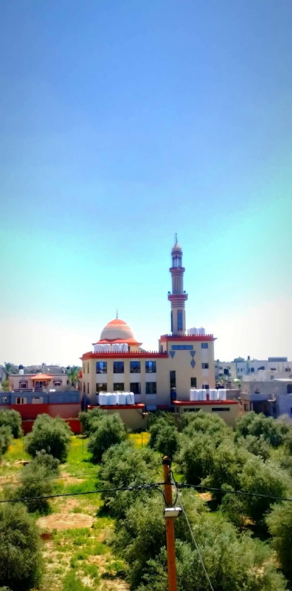
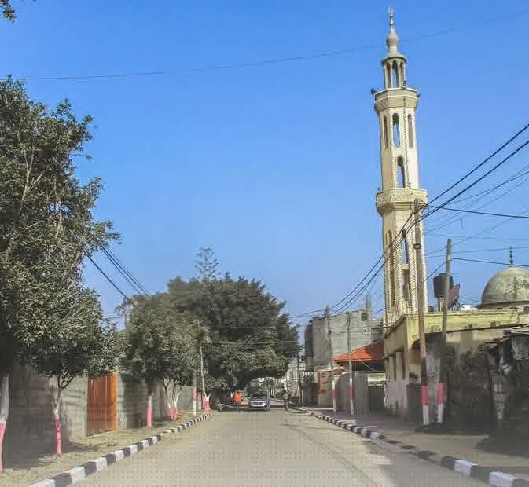
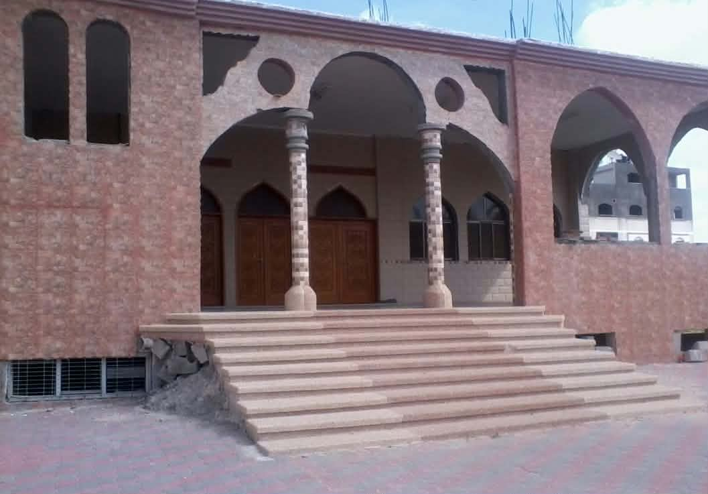
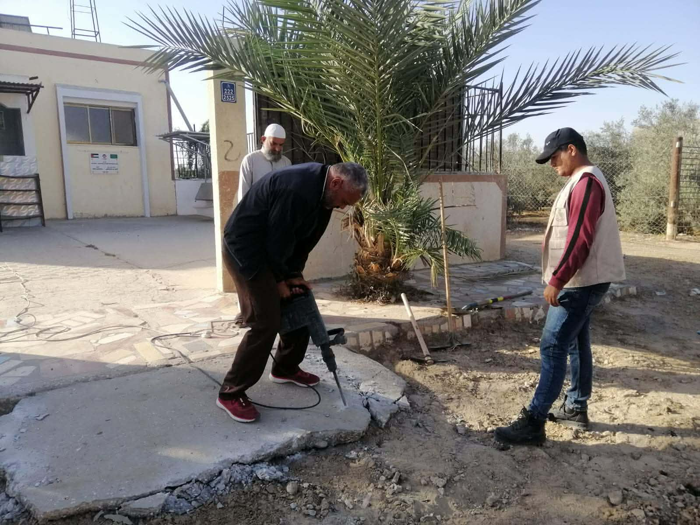

شكّلت مساجد البلدة على مر السنين مراكز للعبادة واللقاء والذاكرة الجماعية لأهل عبسان الجديدة. هذه الصفحة مخصصة لتوثيق أسماء المساجد ومواقعها وصورها، وسيتم استكمالها تباعًا.

حارة أبو عنزة الشرقية

حارة أبو عنزة

منطقة العصافير

منطقة أم المهد